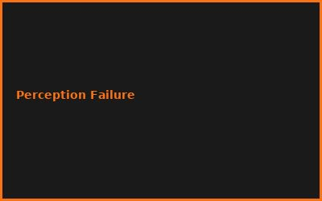
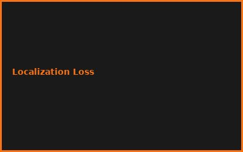
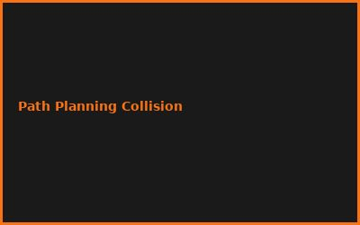
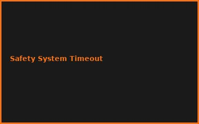

Kapitel 1: Perception Pipeline
- Camera + LiDAR + Radar Fusion
- 3D Object Detection (YOLO v8)
- Lane Detection & Road Segmentation
- Real-time Sensor Processing
Kapitel 2: Localization & Mapping
# SLAM Implementation
# ROS2 + GTSAM
# Particle Filter Localization
poses = slam_frontend.track(sensor_data)
map_state = slam_backend.optimize(poses)
Kapitel 3: Path Planning
- A* / RRT* Algorithms
- Behavior Planning
- Trajectory Generation
- Collision Avoidance
Kapitel 4: Control Systems
- PID Controllers for Steering/Throttle
- Model Predictive Control (MPC)
- Lateral/Longitudinal Dynamics
- Hardware Interfaces (CAN Bus)
Kapitel 5: Decision Making
- Finite State Machines
- Behavior Trees
- Imitation Learning
- Reinforcement Learning Integration
Kapitel 6: Safety & Validation
- Functional Safety (ISO 26262)
- SOTIF Requirements
- Simulation & Testing (CARLA)
- OTA Updates & Rollback
💡 PRO-TIPPS
🎯 Tipp: CARLA Simulator zuerst
Problem: Echte Tests = teuer & gefährlich | Lösung: CARLA Sim = sichere Iteration
💰 BUDGET-HACKS (95% KOSTENLOS!)
💰 Hack: ROS2 + CARLA + OpenSource
Original: Autonomous Vehicle Stack: €500K+ | Hack: ROS2 + CARLA + Jetson: €2K | Einsparnis: 99%
⚠️ FEHLER
❌ Fehler: Unvollständige Sensor-Fusion
Was passiert: Falsche Detektion bei Regen/Schnee | ✅ Lösung: Multi-Sensor Redundanz + Fallback
🌐 COMMUNITY
CARLA Community, Apollo Open Platform, ROS Discourse, Autoware Foundation
📸 Fehler-Galerie



